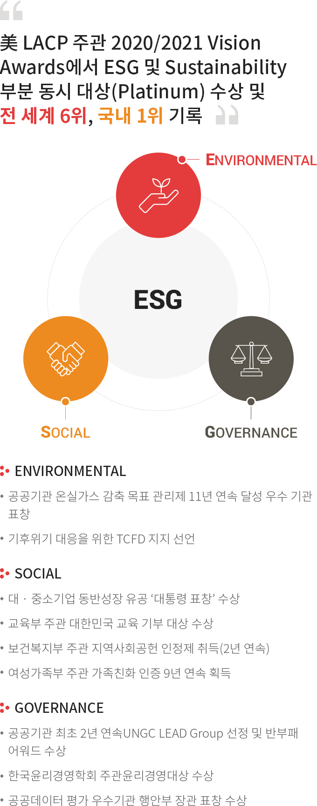
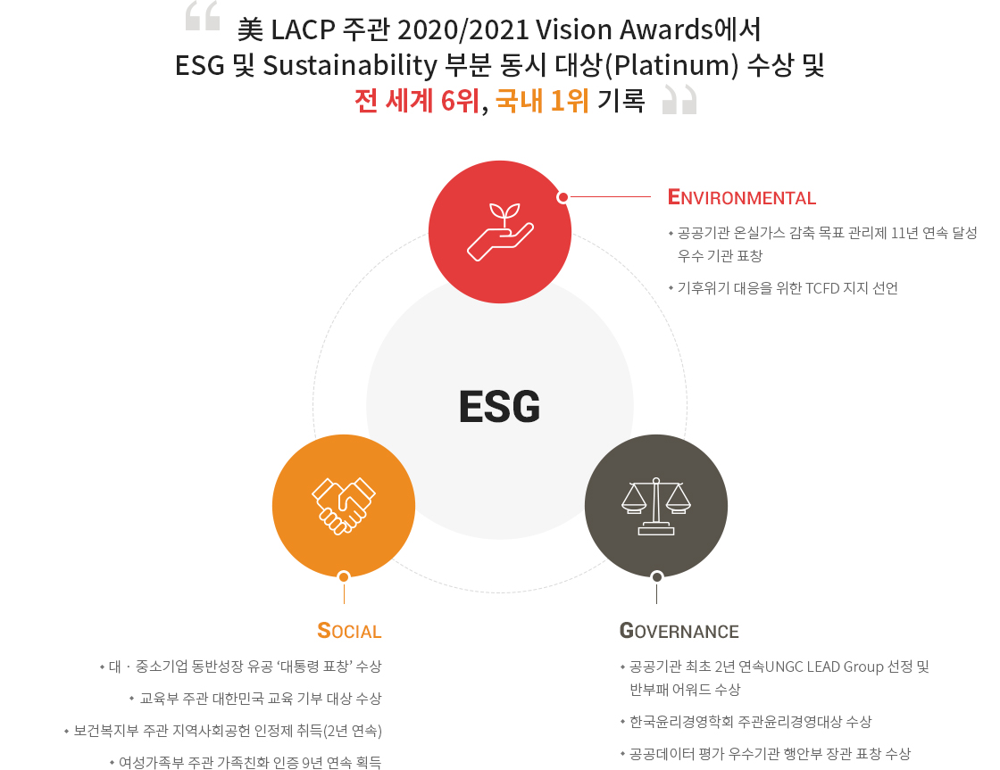

ESG 성과
ESG 성과


美 LACP 주관 2020/2021 Vision Awards에서 ESG 및 Sustainability 부분 동시 대상(Platinum) 수상 및 전 세계 6위, 국내 1위 기록
- ESG
- ENVIRONMENT
- SOCIAL
- GOVERNANCE
ENVIRONMENT
- 공공기관 온실가스 감축 목표 관리제 11년 연속 달성 우수 기관 표창
- 기후위기 대응을 위한 TCFD 지지 선언
SOCIAL
- 대 · 중소기업 동반성장 유공 ‘대통령 표창’ 수상
- 교육부 주관 대한민국 교육 기부 대상 수상
- 보건복지부 주관 지역사회공헌 인정제 취득(2년 연속)
- 여성가족부 주관 가족친화 인증 9년 연속 획득
GOVERNANCE
- 공공기관 최초 2년 연속UNGC LEAD Group 선정 및 반부패 어워드 수상
- 한국윤리경영학회 주관윤리경영대상 수상
- 공공데이터 평가 우수기관 행안부 장관 표창 수상